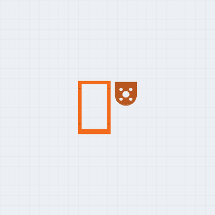
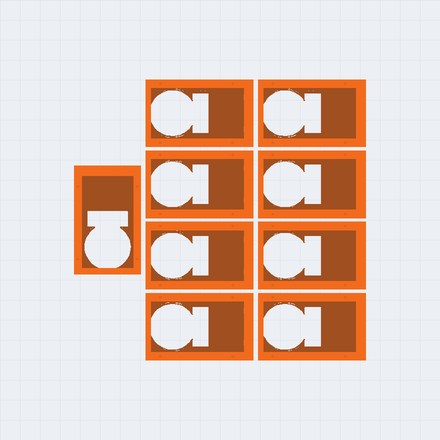
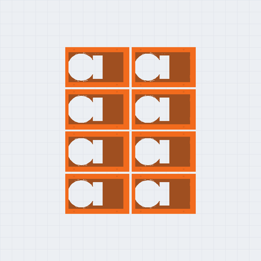
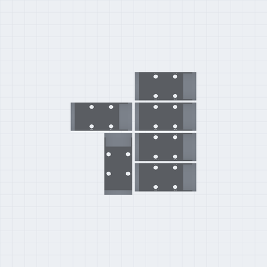
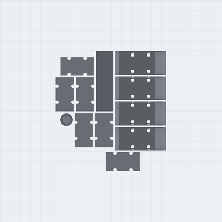
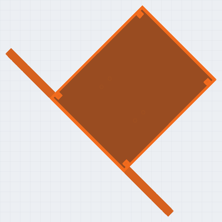
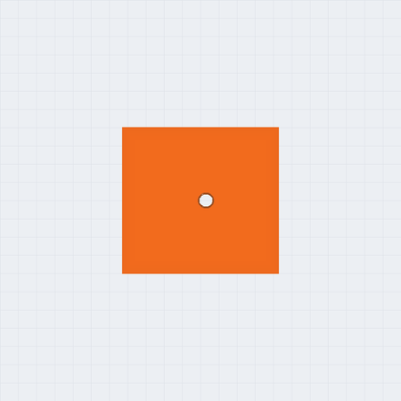
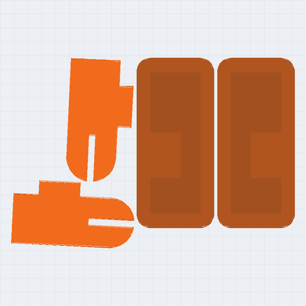
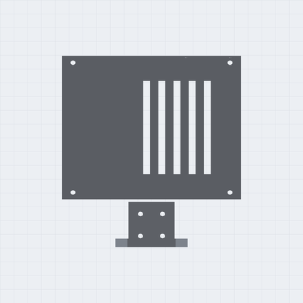
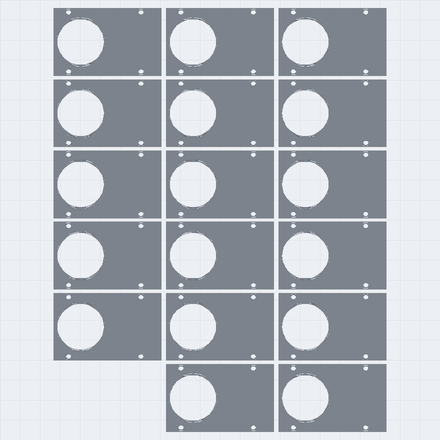

Navitek · N1 · version 2 · 9 novembre 2026
Un humanoïde de 62,1 cm, dont les servos parlent.
17 servos à bus Feetech STS3215 qui renvoient leur position, leur charge, leur tension et leur température, une carte Raspberry Pi Pico 2 W, une centrale inertielle, et 67 pièces en PLA imprimées sans support. La suite de N0 : le même module d'articulation, deux fois plus grand, qui sait où il est.
Version 2 : dessinée, simulée et tranchée. Pas encore imprimée ; les cotes du servo à vérifier sur un vrai d'abord.
La version 1 supposait des oreilles de fixation que le STS3215 n'a pas. La version 2 est dessinée autour du modèle 3D du servo publié par le projet SO-ARM100 (cahier R-047) : un gabarit d'essai à imprimer en premier permet de vérifier la poche et le palonnier. Aucune collision entre les 117 pièces de l'assemblage · chaque plateau tranché dans OrcaSlicer pour une Ender-3 V3 SE · la simulation est simulée, jamais « testée ».
Ce qui change par rapport à N0
Le même principe, deux fois plus grand, et des servos qui disent où ils sont
- Des servos qui parlent.Les SG90 et MG90S de N0 obéissent à l'aveugle. Le STS3215 se branche sur un seul fil commun aux 17 servos et renvoie sa position (4096 pas par tour), sa charge, sa tension et sa température. Le robot peut enfin mesurer son corps.
- Dix-sept articulations au lieu de treize.Chaque hanche gagne un mouvement de côté (le roulis), chaque épaule aussi : le robot peut balancer son poids d'un pied à l'autre au lieu de pencher la cheville. Il manque encore la rotation de la hanche, pour tourner sur place.
- Une centrale inertielle.Un BNO055 dans le torse dit au robot de quel côté il penche. Dans la simulation, c'est ce retour d'information qui fait avancer N1 3,5 fois plus loin, en moyenne, que la même marche aveugle (plus bas).
- Un cerveau en deux étages.Le Pico commande les servos et lit la centrale ; il porte la sécurité. Un Raspberry Pi Zero 2 W facultatif, relié au Pico, ajoute la caméra de la tête et les programmes qui apprennent. Le robot marche sans lui.
Le servo, et ce qu'on sait de lui
Feetech STS3215, version 12 V · relevé sur les fiches de revendeurs, cahier R-037
| Fait | Valeur | État |
|---|---|---|
| Boîtier | 45,2 × 24,7 × 35 mm · 55 g | relevé sur plusieurs fiches (le modèle 3D : 45,4 × 24,8) |
| Couple au blocage, 12 V | 30 kg·cm, 2,7 A | annoncé : un pic, pas le couple continu (une fiche donne environ 5 kg·cm de couple nominal pour la version 7,4 V) |
| Capteur | codeur magnétique 12 bits | relevé |
| Bus | un fil demi-duplex, jusqu'à 1 Mbit/s, 253 servos | relevé |
| Cannelure | 25 dents, arbre de 5,9 mm | relevé |
| Fixation, position de l'arbre | pas d'oreilles ; l'arbre à 10,2 mm du bout ; deux disques de sortie Ø 20, 4 trous M3 sur un carré de 9,9 mm | pris sur le modèle 3D du projet SO-ARM100 (R-047), pas sur un plan de Feetech : à vérifier sur le servo reçu |
| Comparaison avec d'autres servos à bus | non faite | le STS3215 reste le candidat à cause de son écosystème (les bras ouverts SO-100 et SO-101, avec LeRobot) |
Sources : fiches Feetech relayées par servodatabase.com, DFRobot, Seeed/openelab, Waveshare ; la fiche d'origine de Feetech n'a pas pu être lue (texte invisible sur des images). Les sous-modèles (C001, C018, C047) ont le même boîtier mais d'autres engrenages : un seul numéro de pièce dans la nomenclature.
L'électronique, en trois choix
Le bus, la pile, la centrale · chaque choix est écrit comme choix, pas comme fait
- Le bus.Un seul UART du Pico, TX et RX réunis par une résistance, l'écho lu et rejeté ; identifiants 1 à 17, réglés un à un avec un PC et un adaptateur Feetech FE-URT-1. À valider sur le banc : le Pico n'a pas de demi-duplex matériel confirmé.
- La pile.Une 3S (9 à 12,6 V), avec une carte de protection et un fusible, et un interrupteur d'arrêt d'urgence. Un servo de 7,4 V n'accepte pas une 3S : ne pas mélanger les versions. Le Pico est alimenté par un régulateur abaisseur 5 V à part, séparé du rail des servos, jamais directement par la 3S (son entrée accepte au plus 5,5 V).
- La centrale.Un BNO055 (fusion à bord, 100 Hz au plus) plutôt qu'un MPU-6050, jugé en fin de vie. Si 100 Hz ne suffisait pas à l'équilibre, on lirait le gyroscope brut et on filtrerait soi-même.
Le schéma électrique
L'arrêt d'urgence coupe toute la puissance, sans passer par un logiciel ; le bouton d'arrêt du Pico n'en est que le doublon. Le fusible et la carte de protection suivent le cahier R-037 (17 servos bloqués ensemble tireraient 46 A en théorie). Rien n'a encore été câblé.
Le programme
main.py et sts.py, en MicroPython, parlent aux 17 servos par leur protocole série (cahier R-048, d'après la documentation de Waveshare) :
couple plafonné à 60 % du blocage, bouton d'arrêt, et trois modes. Centrer, pour monter les étriers droits ; calibrer, le robot suspendu : chaque
articulation cherche ses deux butées en lisant sa propre position, et les garde comme bornes ; démo. Éprouvé contre des servos simulés qui parlent le même
protocole, octet par octet : 8 épreuves sur 9. L'étalonnage y a trouvé, sur 13 articulations, les limites du modèle à 0,2° près,
et sur les autres de vrais contacts, que les essais de marche ne voyaient pas (plus bas). Pas encore essayé sur un vrai bus.
En simulation : ce que N1 peut faire
MuJoCo 3.8 · modèle tiré de la CAO · 2,3 kg · simulé, pas testé
Le modèle du robot est tiré de la CAO : la géométrie des pièces, les grammes du tranchage, un servo par articulation borné
au couple de blocage annoncé (30 kg·cm, soit 2,94 N·m). Ce qui suit est simulé : le vrai robot peut en différer.
Les hypothèses (inertie du moteur, masse de l'électronique, couple réel) sont écrites dans modele_n1.py, et le cahier R-038
de notre journal de recherche donne ce qu'on attendait avant chaque essai.
S'accroupir
Part du couple de blocage que le genou doit fournir, en moyenne puis au pic. Sur deux jambes, le genou monte à 37 % du blocage au pic et 13 % en moyenne à 90° de genou ; sur une jambe, le robot tient jusqu'à 70° (là où N0 saturait), et tombe à 90°.
| Genou | Deux jambes (moyen / pic) | Une jambe (moyen / pic) | Une jambe |
|---|---|---|---|
| 20° | 3 % / 8 % | 25 % / 46 % | tombe |
| 40° | 6 % / 16 % | 5 % / 12 % | tombe |
| 60° | 10 % / 24 % | 4 % / 8 % | tombe |
| 70° | 11 % / 29 % | 6 % / 26 % | tombe |
| 90° | 13 % / 37 % | 4 % / 16 % | tombe |
L'équilibre sur une jambe est cherché par un décalage fixe de la hanche et de la cheville, sans retour d'information : un ordre de grandeur.
Marcher, avec et sans retour d'information
Une marche périodique à onze réglages, plus quatre gains qui corrigent la cheville d'après l'inclinaison du torse, a été cherchée trois fois (trois graines) par l'algorithme CMA-ES, puis refaite trois fois avec les gains forcés à zéro : la même marche, aveugle. Avec le retour, la distance moyenne est de 35 cm en douze secondes ; sans, de 10 cm (aucune des trois marches aveugles ne tombe). À titre de repère, N0 aveugle faisait 6 à 8 cm en dix secondes, pour un robot deux fois plus petit.
| Marche | Graine | Avance en 12 s | Dérive de côté | Fin | Couple max |
|---|---|---|---|---|---|
| avec retour | 1 | 25 cm | 1 cm | debout | 86 % |
| avec retour | 2 | 30 cm | 5 cm | debout | 100 % |
| avec retour | 3 | 50 cm | 6 cm | debout | 100 % |
| aveugle | 1 | 8 cm | 0 cm | debout | 65 % |
| aveugle | 2 | 9 cm | 7 cm | debout | 93 % |
| aveugle | 3 | 13 cm | 3 cm | debout | 100 % |
Un seul modèle de servo, parfait (sans jeu, sans chute de tension, sans échauffement) ; les marches sont réglées sur le modèle lui-même, donc elles peuvent en exploiter un défaut ; trois graines ; la marche avance en diagonale (la dérive de côté est dite). Se relever : essayé, pas obtenu. Onze recherches de mouvements, couché sur le dos, dans le plan sagittal, même avec trois fois plus de couple : au mieux assis ou agenouillé, jamais debout (cahier R-038, sur la version 1 de la CAO : pas refait). Il manque à N1 la rotation de la hanche, que font les robots qui se relèvent. Le « couple max » est la part du couple de blocage : 100 % veut dire que le servo sature.
Ces marches glissent encore. Rejouées en relevant les appuis (cahier R-044), les 10 marches publiées sur cette page gardent les deux pieds au sol 53 % à 96 % du temps, lèvent les pieds de 3 à 64 mm au plus, et 4 sur 10 font glisser leurs pieds au sol plus loin qu'elles n'avancent. C'est une marche réglée par la simulation, qui en exploite le sol : sur un vrai plancher, le glissement dépendra du revêtement. Une marche qui lève les pieds reste à régler.
Une erreur corrigée le 9 novembre. Les marches de la version 1 étaient réglées avec les contacts coupés entre les pièces du robot : rejouées, elles faisaient se traverser les deux jambes, et les mains entrer dans les hanches, la moitié du temps environ (cahier R-048). La version 2 écarte les hanches et les épaules, garde les bras écartés de 15° en marchant, et règle les marches contacts allumés entre les deux jambes et entre les bras et les jambes. Contrôle sur les maillages exacts, toutes les 50 ms : plus aucune pièce n'en traverse une autre ; seuls les deux pieds se frôlent, de 0 à 71 instants sur 240 selon la marche (le simulateur les fait se toucher, pas se traverser).
Ce qui fait tomber la marche
Chaque hypothèse du modèle a été divisée par deux, puis multipliée par un et demi, et la meilleure marche rejouée telle quelle (sans la réoptimiser).
| Hypothèse | Divisée par 2 | Multipliée par 1,5 |
|---|---|---|
| Masse de l'électronique (330 g) | tient, 31 cm | tombe à 4,1 s |
| Couple de blocage des servos | tient, 17 cm | tient, 33 cm |
| Raideur de position des servos | tient, 11 cm | tombe à 7,9 s |
| Frottement du sol | tombe à 7,2 s | tient, 18 cm |
| Inertie du rotor | tient, 21 cm | tient, 24 cm |
| Amortissement des charnières | tient, 24 cm | tient, 22 cm |
Une marche qui ne dépend pas d'un détail du modèle
La fragilité ci-dessus vient du réglage sur un seul modèle, pas du robot. Une deuxième recherche a donc réglé la même marche pour tenir sur huit modèles à la fois (masse de l'électronique, frottement, inertie, amortissement, couple et raideur, chacun un peu changé) : l'aptitude d'un candidat est celle de son pire modèle. Résultat : la marche robuste tient dans les 12 variations sur 12 de ±50 % (plus larges que l'entraînement), contre 9 sur 12 pour la marche réglée sur le nominal. Le prix : 34 cm en 12 s au lieu de 50. Et si les servos sont plafonnés à 60 % de leur couple de blocage (une marge de 40 %, parce que ce couple est un pic annoncé, pas un couple continu), la marche robuste tient encore dans les huit modèles : 24 cm en 12 s, soit 2 cm par seconde.
| Hypothèse (÷2 · ×1,5) | Marche réglée sur le nominal | Marche robuste |
|---|---|---|
| Masse de l'électronique (330 g) | tient, 31 cm · tombe à 4,1 s | tient, 34 cm · tient, 41 cm |
| Couple de blocage des servos | tient, 17 cm · tient, 33 cm | tient, 37 cm · tient, 35 cm |
| Raideur de position des servos | tient, 11 cm · tombe à 7,9 s | tient, 6 cm · tient, 15 cm |
| Frottement du sol | tombe à 7,2 s · tient, 18 cm | tient, 21 cm · tient, 36 cm |
| Inertie du rotor | tient, 21 cm · tient, 24 cm | tient, 37 cm · tient, 39 cm |
| Amortissement des charnières | tient, 24 cm · tient, 22 cm | tient, 26 cm · tient, 37 cm |
Cela ne prouve pas que la marche tiendrait sur le vrai robot : les huit modèles sont des variations d'un même modèle simplifié (pas de jeu, pas de sol irrégulier, pas de chute de tension).
Ce qui s'imprime
67 pièces · 59 h 01 · 1117 g de PLA · 11 plateaux de 220 × 220 mm
Comme pour N0, tout s'imprime sans support, sur une Ender-3 V3 SE, en PLA, 3 parois et 25 % de remplissage. Les temps et les grammes viennent du tranchage dans OrcaSlicer, pas d'une estimation. Le plateau P0 est le gabarit d'essai : à imprimer d'abord.











| Pièce | Qté | Taille (mm) | Temps | PLA | Plateau | |
|---|---|---|---|---|---|---|
| Gabarit d'essaià imprimer en premier, pour poser un vrai servo et mesurer ses trous | 1 | 54,2 × 60,6 × 10 | 30 min | 7,8 g | P0 | STL |
| Boîtier de servoreçoit un STS3215 par le dessus ; son bout porte le carré de 4 vis M3 de l'articulation suivante | 17 | 54,2 × 33,6 × 35,7 | 1 h 14 | 23,3 g | P1 | STL |
| Bridetient le servo dans son boîtier, par le dessus (4 vis M2 x 8) | 17 | 54,2 × 33,6 × 2 | 9 min | 3,2 g | P10 | STL |
| Étriertourne avec le servo : vissé sur ses deux disques, au-dessus et au-dessous | 16 | 50,8 × 23 × 38,5 | 46 min | 10,1 g | P3 | STL |
| Rallongeallonge la cuisse, le tibia et le bras | 6 | 18 × 33,6 × 18 | 21 min | 6,2 g | P5 | STL |
| Visièreentre dans sa fente, sur le devant de la tête | 1 | 16,8 × 59,2 × 3,2 | 9 min | 3 g | P5 | STL |
| Antenneferme le trou du tournevis, sur le dessus de la tête | 1 | 12,6 × 12,6 × 31,4 | 10 min | 1,1 g | P5 | STL |
| Torseporte les hanches, les épaules, le cou, la pile, la carte et la centrale | 1 | 130 × 228 × 80 | 7 h 24 | 163,6 g | P6 | STL |
| Têtese visse sur le palonnier du servo du cou | 1 | 86 × 80 × 80 | 6 h 34 | 142,5 g | P7 | STL |
| Mainse visse sur l'étrier du coude | 2 | 87,9 × 46 × 22 | 1 h 39 | 33,6 g | P8 | STL |
| Pied gauchese visse sous l'étrier de la cheville | 1 | 122 × 64 × 6,5 | 1 h 08 | 27 g | P8 | STL |
| Pied droitse visse sous l'étrier de la cheville | 1 | 122 × 64 × 6,5 | 1 h 08 | 27 g | P8 | STL |
| Dosferme le torse par 4 vis | 1 | 130 × 104 × 2,4 | 1 h 06 | 28,1 g | P9 | STL |
| Support du couvissé sous le toit du torse ; reçoit le boîtier du servo du cou | 1 | 32,7 × 52,6 × 22 | 27 min | 5,8 g | P9 | STL |
À acheter
Prix relevés en ligne le 9 novembre 2026, en dollars américains sauf mention, hors taxes et hors livraison · cahier R-049
| Article | Qté | Prix relevé | Où |
|---|---|---|---|
| Servo Feetech STS3215-C018, 12 V, 30 kg·cm, double sortie | 17 | 26 à 31,38 $ | AIFitLab (en commande), OpenELab 27,99 $, RobotShop 31,38 $ |
| Raspberry Pi Pico 2 W | 1 | 7 à 8,61 $ | prix de lancement 7 $ ; Vilros 8,61 $ |
| Centrale Adafruit BNO055 | 1 | 34,95 $ | Adafruit, n° 2472 |
| Pile LiPo 3S, 2200 mAh, prise XT60 | 1 | 11 à 27 $ | Turnigy, BuddyRC, Gens Ace |
| Carte de protection 3S, 25 A | 1 | 4,80 à 15,32 $ | vendue pour le Li-ion : vérifier ses seuils pour une LiPo |
| Abaisseur 5 V, 3,4 A | 1 | 12,95 $ | Pololu D30V30F5 |
| Arrêt d'urgence, champignon 22 mm | 1 | 17,79 à 21,59 $ | Dayton 30G257 ou 32UK35 : il doit couper tout le courant de la pile, ou commander un relais qui le fait |
| Adaptateur Feetech FE-URT-1 ou FE-URT2 | 1 | 13,67 £ à 19,44 $ | pour régler les identifiants 1 à 17 ; le FE-URT-1 est arrêté, le FE-URT2 le remplace |
| Raspberry Pi Zero 2 W (facultatif) | 0 ou 1 | 15 à 21,38 $ | prix de lancement 15 $ ; SparkFun 17,25 $ (rupture) |
| Vis | — | — | M2 × 8 : 68 (les brides) · M3 × 6 : 68 (les palonniers ; souvent fournies) · M3 × 10 : 64 (les disques du bas) · M3 × 8 : 68 · M3 × 25 : 24 (les rallonges) · M2 × 6 : 4 (le Pico) |
De 484 à 577 $ US pour les servos, le Pico et la centrale (17 servos entre 442 et 533 $) ; environ 540 à 680 $ US avec la pile, la protection, l'abaisseur, l'arrêt d'urgence et l'adaptateur. Sans les vis, le plastique, la livraison ni les droits de douane. Un ordre de grandeur, pas une soumission : les prix changent, plusieurs articles étaient en rupture. Rien n'a été acheté.
Le montage, dans l'ordre
- Le gabarit d'abord.Imprimer le plateau P0 (30 min), y poser un vrai STS3215 et son palonnier rond : le servo doit entrer dans la poche sans forcer, et les
4 trous du bout d'étrier tomber sur ceux du palonnier. Sinon, corriger les cotes en tête de
n1.pyet relancer (elles viennent d'un modèle 3D, pas d'un servo en main). - Les identifiants.Chaque servo, seul sur l'adaptateur, reçoit son numéro (1 à 5 : jambe gauche, de la hanche à la cheville ; 6 à 10 : jambe droite ; 11 à 13 et 14 à 16 : bras gauche et droit ; 17 : le cou). Une étiquette sur chacun.
- Le centre.
main.pyen mode « centrer » : les 17 servos à 2048 pas. Ils restent là pendant tout le montage. - Les modules.Pour chaque articulation : le servo dans son boîtier, la bride vissée par-dessus (4 vis M2), puis l'étrier droit, vissé sur le palonnier (4 vis M3 × 6) et sur le disque du bas (4 vis M3 × 10). Les fiches des câbles branchées avant de fermer.
- Les chaînes.Chaque étrier se visse sur le bout du boîtier suivant (4 vis M3 × 8, ou M3 × 25 à travers une rallonge), dans l'ordre de la vue 3D ; les hanches et les épaules sous le torse et sur ses rebords, le cou sur son support, puis la tête sur le palonnier du cou.
- L'électronique.Selon le schéma : l'arrêt d'urgence et le fusible avant tout le reste, puis le bus, l'abaisseur, le Pico, la centrale.
- L'étalonnage.Le robot suspendu, pieds dans le vide :
main.pyen mode « calibrer ». Il écrit ses vraies butées danscalibration.json; lire le tableau qu'il affiche avant de le poser au sol.
Et après
N2, le même principe à un mètre
N1 doit encore prouver que ses cotes de servo tiennent sur un vrai boîtier, puis qu'il se relève (non obtenu en simulation). Ensuite : N2, environ un mètre, des moteurs sans balais avec un réducteur imprimé ; puis N3, de la taille d'un adulte. La feuille de route est sur la page de N0.
Les fichiers
Licence CC BY 4.0 : imprimez, modifiez, partagez, en nommant Navitek N1
n1.py, le script FreeCAD qui les dessine (les cotes du servo, à vérifier, sont en tête).1,2 Mo · ZIP
La simulation MuJoCo
Le modèle, les scripts des essais et leurs résultats en JSON : refaites-les chez vous.65 ko · ZIP
Le programme du robot
main.py et sts.py (MicroPython) et le schéma électrique ; éprouvés contre des servos simulés.8 ko · ZIP
Version 2 : les fichiers changeront avec les premières mesures du servo et les premières impressions. Ce qui a été vérifié et ce qui ne l'est pas est dit plus haut, sans arrondi.
Vous avez un STS3215 ?
Mesurez la distance de l'arbre au bout du boîtier et l'entraxe des 4 trous de son palonnier rond, et envoyez-nous les deux chiffres, ou une photo avec un pied à coulisse : nos cotes viennent d'un modèle 3D, pas d'un servo en main. Dites aussi ce qui accroche.
Écrire à Yoan ou appelez : 514 926-8633Navitek N0, le petit humanoïde · Voir comment on travaille : la méthode · Retour à l'accueil